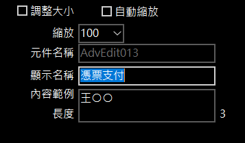

文件內容設計－公用區
調整紀錄元件的大小及名稱，字串類型項目的的範例內容。
紀錄元件縮放：
調整大小：元件項目可以使用滑鼠直接拖拉大小。
自動縮放：開啟自動縮放，字串元件會變成一行，圖型元件會呈現其原始大小。
縮放：可放大文件及紀錄元件的視覺大小，以便利設計進行。
元件名稱：系統自動命名，無法修改。
顯示名稱：可由使用者命名，便於文件設定過程中的元件辦識。
內容範例：輸入模擬資料，便於檢視、設計。
長度 3：自動計算內容範例字串長度。

公用區